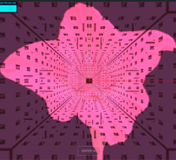
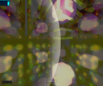

Cantor 3D fractal orbiting residence ghetto
Cantor 3D fractal orbiting residence ghetto
Those with epileptic vulnerability please use caution in some channels
Best VR results are obtained using the Brave browser
If a channel fails to load click 'exit VR' and then 'enter VR' again
If this fails try a page refresh and then 'enter VR' again
Cantor 3D fractal orbiting residence ghetto
 Cantor 3D fractal orbiting residence ghetto with gladiolus illumination
 underwater photosynthesis